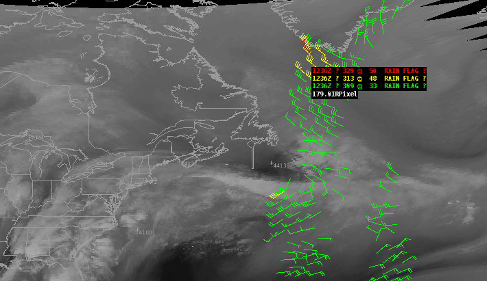

Satellite Imagery
NOAAport GINI imagery
Uniwisc McIDAS AREA files
VIIRS
VIIRS is one of five instruments onboard the NPP satellite. VIIRS' mission is to collect radiometric imagery in visible and infrared wavelengths of the Earth's surface; this includes observing fires, ice, ocean color, vegetation, clouds, and land and sea surface temperatures, and supplying high-resolution images and data used by meteorologists to assess climate change and improve short-term weather forecasting.
The VIIRS submenu option provides VIIRS imagery and moderate band satellite displays for the CONUS, Alaska, and Pacific regions. In addition to accessing the NPP Product VIIRS data via the Satellite menu, the VIIRS Imagery data can also be accessed using the Product Browser.
GOES and POES Sounding Data
GOES and POES Sounding Data Availability Plots displays the locations where GOES and POES temperature and moisture profiles are available. These soundings are displayed on a Skew-T/log P chart using the Points tool and the Volume Browser. Soundings from the GOES satellites are made only in relatively cloud-free areas, whereas POES systems produce temperature and moisture soundings in clear and cloudy atmospheres. Each hour, NESDIS provides the latest soundings from GOES East and West. Although the GOES East and West sounders yield soundings over a broad area, the default AWIPS configuration retains soundings only from within each site's Regional CAVE scale domain. POES soundings are generated approximately every 12 hours and have more global coverage.
POES Imagery
The POES Imagery section of the Satellite menu contains selectors for IR Window, Visible, 3.7µ, and 11-3.7µ products. These are viewable on all scales.
Sounder Imagery
The products available from the Sounder Imagery submenu are based purely on the imager instruments aboard the GOES East (GE) and GOES West (GW) satellites.
Derived Products Imagery
A variety of precipitation products are accessible from the Derived Products submenu. These products are derived from one or more of the various satellites (e.g., DMPS, POES, GOES, and GPS). Descriptions of the products follow.
The Blended Rain Rate (formerly Rainfall Rate) product is produced hourly to gather recent rain rate retrievals from passive microwave instruments on six polar-orbiting satellites. The blended rain rate eliminates the bias between those data sets and provides a unified, meteorologically significant rain rate field to weather forecasters.
The GOES products derived from the GOES satellite include Lifted Index, Total Precip Water (TPW), Cloud Amount, Cloud Top Height, Skin Temperature, and Low Cloud Base. Because the imagery from these products is based on the GOES sounder instrument, several important differences exist between these products and the other (imager-based) imagery. The main differences are that the resolution is no finer than 10 km, the product update frequency is driven by the sounder instrument (AWIPS receives a set of GOES East/West composite derived product images once per hour), and the aerial coverage is based on that of the sounder scans, which is somewhat less than the aerial coverage provided by the imager. Descriptions of the products follow.
- Lifted Index is a common measure of instability. Its value is obtained by computing the temperature that air near the ground would have if it were lifted to some higher level (usually around 18,000 feet), and comparing that temperature to the actual temperature at that level. The more negative the value, the more instability there is.
- Total Precip Water is the vertically integrated water vapor content in a column extending from the earth's surface to the top of the atmosphere.
- Cloud Amount provides an hourly update of cloud amounts within a geostationary satellite field of view. You can loop through the display to identify increasing/decreasing cloud conditions and trends.
- Cloud Top Height is the height of the cloud in thousands of feet (base - top). Skin Temperature is the sea surface temperature of the ocean surface water.
- Low Cloud Base provides nighttime images of fog and low stratus clouds derived from a combination of two GOES IR channels. This product identifies cloud ceilings of <1000 feet and is generated hourly starting between 2042 and 2142 GMT, and ending between 1510 and 1610 GMT the next day. This product is beneficial to the warning and forecast processes specific to aviation and terminal forecasting
The Total Precip Water (TPW) value can also be derived from the data sources of DMSP, SSM/I (Defense Meteorological Satellite Program Special Sensor Microwave / Imager), and POES AMSU (POES Advanced Microwave Sounding Unit) satellites, which are accessed from the DMSP SSM/I, and POES AMSU sections of the submenu.
Variations of TPW ("Blended Total Precip Water" and "Percent of Normal TPW") are selectable under the AMSU and SSM/I + GPS section.
- The Blended Total Precip Water product is a blend of the various data sources of AMSU, SSM/I, and GPS satellites, and can be over water or land.
- The Percent of Normal TPW product is calculated at various times (hourly, monthly, seasonally, etc.) to determine departures from the normal. From the information obtained, forecasters can predict the chances of having a below average, normal, or above average precipitation in the upcoming months.
SSM/I Point Data
SSM/I Point Data plot displays data collected over the course of a day for calculating ocean wind speeds.
GOES High Density Winds
GOES High Density Winds submenu has options to display satellite-derived multi-layer winds plots from the IR, Visible, and three Water Vapor channels. In addition, you can display individual layers that display a composite of all the satellite channels.
MTSAT High Density Winds
MTSAT High Density Winds cover the Western Pacific.
ASCAT winds (25 km)
Scatterometer Winds are obtained from the ASCAT instrument on EUMETSAT's MetOP-A polar orbiting satellite. This instrument sends pulses of radiation to the ocean surface and measures the amount of energy, called backscatter, it receives back. When you sample these observations, the time, satellite ID, wind direction, and wind speed are provided. With the polar orbiting scanning, a given region will generally be sampled about every 12 hours.
ASCAT winds (25 km retrieval resolution but interpolated and displayed at 12.5 km resolution) are launchable from both the CAVE Satellite menu and the Upper Air menu. The ASCAT instrument generates ocean surface wind retrievals. The ASCAT Scatterometer Ocean Winds product is displayable on CAVE at all scales.
